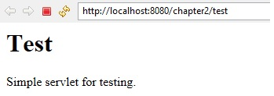
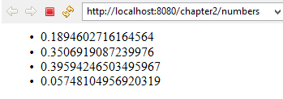
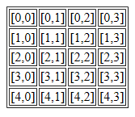

2.2 A Servlet That Generates HTML
In previous section, we created a servlet that generate a plain text. If we want that our servlet can send HTML, we need to add following statement:
response.setContentType("text/html");Look at the following example program :
package com.beginwithjava.servlet;
import java.io.*;
import javax.servlet.*;
import javax.servlet.annotation.*;
import javax.servlet.http.*;
@WebServlet("/test")
public class TestServlet extends HttpServlet
{
// process "get" requests from clients
protected void doGet(HttpServletRequest request,
HttpServletResponse response)
throws ServletException, IOException
{
response.setContentType("text/html");
PrintWriter out = response.getWriter();
// send HTML page to client
out.println("<html>");
out.println("<head><title>A Test Servlet</title></head>");
out.println("<body>");
out.println("<h1>Test</h1>");
out.println("<p>Simple servlet for testing.</p>");
out.println("</body></html>");
}
}Output:

Look at another servlet that generates a list of four random numbers.
package com.beginwithjava.servlet;
import java.io.*;
import javax.servlet.*;
import javax.servlet.annotation.*;
import javax.servlet.http.*;
@WebServlet("/numbers")
public class RandomNumbers extends HttpServlet
{
protected void doGet(HttpServletRequest request,
HttpServletResponse response)
throws ServletException, IOException
{
response.setContentType("text/html");
PrintWriter out = response.getWriter();
out.println("<html>");
out.println("<head><title>Four Random Numbers</title></head>");
out.println("<body>");
out.println("<ul>");
for (int i = 1; i <= 4; i++)
{
out.println("<li>" + Math.random() + "</li>");
}
out.println("</ul>");
out.println("</body></html>");
}
}
Output:

Try it Yourself : Create a servlet that uses a loop to output an HTML table with 5 rows and 4 columns. Your output should look like this:
